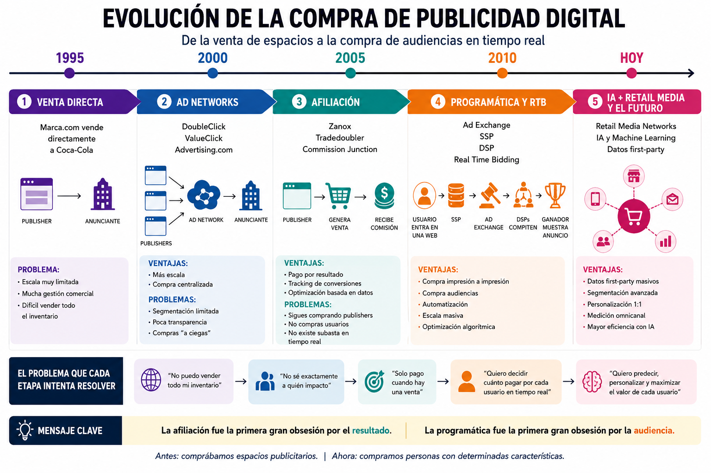

Pantalla 00 · 5–10 min
00 · Bienvenida
El viaje de una impresión publicitaria.
Una sesión práctica para entender cómo una web convierte un espacio publicitario en una impresión servida, medida y monetizada.
Qué vamos a hacer hoy
No vamos a trabajar con PowerPoint. Vamos a trabajar con una web de clase, un Google Sheet, simuladores, DevTools y casos prácticos.
Quién os acompaña
Trabajo con campañas, datos, leads y plataformas reales. Por eso he diseñado esta sesión como me habría gustado que me explicaran la programática al principio: viendo el proceso, tocando herramientas y tomando decisiones.
Cómo trabajaremos
Navigatorcontrola la web y los pasos.
Inspectorabre DevTools, consola o recurso técnico.
Recorderanota evidencias en el Sheet.
Speakerexplica conclusiones del grupo.
No gana quien más términos técnicos use. Gana quien mejor observa, justifica y explica.
Pantalla 01 · 20 min
01 · Evolución de la compra digital
De comprar espacios a comprar oportunidades utilizando señales en tiempo real.
La programática aparece porque la compra manual no podía escalar al ritmo de Internet.

El problema inicial
Al principio, la publicidad digital se compraba de forma parecida a la publicidad tradicional: una marca o una agencia negociaba con un medio, reservaba espacios, pactaba formatos, fechas y precios.
Pero Internet creció: más webs, más usuarios, más dispositivos, más formatos, más datos, más campañas y más necesidad de medición. El modelo manual no desaparece, pero deja de ser suficiente.
Compra directaRedes publicitariasAd exchangesRTBHeader Bidding
Cambio mental
Antes
Quiero aparecer en esta web.
Ahora
Quiero impactar a este tipo de usuario, en este contexto, con este formato, a este precio.
Antes se compraban espacios. Ahora se compran oportunidades de impacto.
Pantalla 02 · 30 min
02 · Inventario y formatos
Antes de vender una impresión, el publisher necesita tener inventario.
Una web no vende publicidad en abstracto. Vende espacios concretos con formato, posición, contexto y visibilidad.
La web como escaparate
Una web funciona como un centro comercial: tiene escaparates, pasillos, zonas calientes, zonas frías, pantallas grandes, carteles pequeños y espacios más o menos visibles.
| Formato | Qué deben entender |
|---|---|
| 300x250 | Robapáginas común y flexible. |
| 300x600 | Más presencia visual. |
| 728x90 / 970x90 | Megabanner desktop. |
| 970x250 | Billboard de alto impacto. |
| 320x50 / 320x100 | Banner móvil. |
| Inread / outstream | Vídeo dentro del contenido. |
| Native | Publicidad integrada en apariencia editorial. |
| Skin / Rich Media | Alto impacto, más invasivo y más caro. |
Actividad
Entrad en MediaLab, elegid varios formatos y completad la pestaña 03 · Inventario y valor.
Formato + posición + contexto + visibilidad = valor publicitario.
Pantalla 03 · 30 min
03 · Detectives AdTech
Vamos a buscar inventario publicitario en webs reales.
Antes de abrir DevTools, hay que aprender a observar.
Primero observamos
Entrad en una web real y miradla como usuarios. Buscad espacios publicitarios visibles: dónde aparecen, qué formato parecen tener, si están above the fold o below the fold, si interrumpen la lectura y qué valor tienen.
Después buscamos señales
Añadid google_console=1 a la URL.
https://www.ejemplo.com/articulo
↓
https://www.ejemplo.com/articulo?google_console=1
https://www.ejemplo.com/articulo?utm_source=test
↓
https://www.ejemplo.com/articulo?utm_source=test&google_console=1
Qué puede mostrar
Ad units, slots, sizes, delivery info, targeting o espacios unfilled. La consola no nos da toda la verdad, pero nos da pistas muy valiosas.
Una duda bien formulada vale más que una respuesta inventada.
Pantalla 04 · 30 min
04 · Inspector AdTech
Vamos a abrir el capó de un banner.
El banner no aparece mágicamente. Hay un hueco, una llamada, una decisión, una creatividad y una medición.
SlotAd callDecisiónCreatividadImpresiónViewabilityClic
Slot
El slot es el espacio publicitario reservado dentro de la página. Todavía no es el anuncio: es el hueco donde podría cargarse un anuncio.
Ad call
La ad call es la petición que hace la página para solicitar un anuncio. Puede incluir ad unit, tamaño, URL, contexto o parámetros comerciales.
Decisión y medición
En muchos publishers, Google Ad Manager ayuda a ordenar la decisión entre distintas fuentes de demanda, campañas y reglas. Después se mide impresión, visibilidad, clic y conversión.
Un banner es solo la parte visible de una cadena de decisiones técnicas, comerciales y de medición.
Pantalla 05 · 30 min
05 · Header Bidding
Cuando el publisher invita a más compradores a competir por la misma impresión.
Header Bidding crea una competición previa entre distintas fuentes de demanda antes de que el ad server tome la decisión final.
El problema
Si solo preguntas a una fuente de demanda, puedes vender la impresión, pero quizá no al mejor precio posible.
Usuario carga páginaSlot disponibleHB consulta demandaVuelve mejor pujaGAM decide
Header Bidding vs Open Bidding
| Concepto | Explicación sencilla |
|---|---|
| Header Bidding | Competición previa organizada por el publisher, antes de llamar al ad server. |
| Open Bidding | Competición integrada dentro del entorno de Google Ad Manager. |
| GAM | Sistema que ayuda al publisher a ordenar la decisión final. |
Stack simplificado
Venta directaProgramática garantizadaPreferred dealsHeader BiddingOpen BiddingOpen auction / backfillHouse ads
Header Bidding no sustituye a Google Ad Manager. Aporta competencia.
Pantalla 06 · 30 min
06 · DevTools real
Buscamos señales reales del viaje de una impresión.
DevTools no nos da la verdad absoluta. Nos ayuda a construir hipótesis razonables.
Preparación
- Abrid Chrome.
- Desactivad adblocker.
- Aceptad consentimiento de cookies.
- Abrid DevTools.
- Entrad en Network.
- Activad Preserve log.
- Activad Disable cache.
- Recargad.
- Haced scroll lentamente.
Filtros útiles
gampadsecurepubadsgoogletagdoubleclick prebidhb_pubmaticopenx xandrcriteo300x250300x600
Qué registrar
Anotad filtro, petición, dominio, parámetro, valor, qué creéis que significa, nivel de certeza, evidencia y qué no podéis confirmar.
Un buen diagnóstico distingue evidencia, hipótesis y duda.
Pantalla 07 · 15 min
07 · Subasta RTB
Ahora dejamos de observar y empezamos a pujar.
En RTB no compras un banner. Compras una oportunidad concreta de impactar a un usuario concreto en un contexto concreto.
El escenario
Publisher: LetsFamily
Contexto: artículo sobre embarazo
Formato: 300x250
Posición: above the fold
Usuario: alta afinidad con maternidad
Ronda 1 · Segundo precio
Gana la puja más alta, pero el ganador paga la segunda mejor puja.
Ronda 2 · Primer precio
Gana la puja más alta y paga exactamente lo que ha pujado.
Actividad
Abrid 05b. Subasta RTB y rellenad solo las celdas verdes de las rondas 1 y 2: puja CPM, motivo y reflexión.
La misión no es pujar siempre más alto. La misión es comprar bien.
Pantalla 08 · 10 min
08 · Caso Last Look
Cuando saber el precio a batir cambiaba toda la subasta.
No solo importa quién gana una subasta. También importa qué información tiene cada participante antes de pujar.
El caso
Una impresión de un publisher sale al mercado. Por un lado compiten varias fuentes mediante Header Bidding. Por otro lado, Google AdX también puede competir.
HB genera una pujaLa puja llega a GAMAdX conoce precio a superarAdX compite con esa informaciónImpacto en publisher
Preguntas durante el caso
- ¿Quién sabe qué?
- ¿Cuándo lo sabe?
- ¿Qué ventaja le da?
- ¿Qué impacto puede tener para el publisher?
Cuidado con la interpretación: no nos quedamos con "Google hacía trampas". Nos quedamos con una idea más profesional: el diseño de la subasta generaba una ventaja estructural de información.
En una subasta, la información puede valer tanto como la puja.
Pantalla 09 · 30 min
09 · Floor, bid shading y GAM simplificado
Después de la subasta, empieza la estrategia.
El publisher quiere vender bien. El comprador quiere ganar sin pagar de más. GAM ayuda a ordenar la decisión final.
Floor price
Si ninguna puja supera el mínimo, la impresión puede quedar sin vender. Un floor alto protege el valor, pero si es demasiado alto puede matar la demanda.
Bid shading
En primer precio, el ganador paga lo que puja. Por eso los compradores ajustan sus pujas para no sobrepagar.
GAM simplificado
La puja programática no vive sola. El publisher puede tener directa, acuerdos preferentes, programática garantizada, open auction, backfill o house ads.
Yield manager
Optimiza ingresos, demanda, fill rate, viewability, formatos, experiencia de usuario y acuerdos comerciales.
La monetización no consiste en vender siempre al precio más alto. Consiste en encontrar equilibrio.
Pantalla 10 · 15 min
10 · Creatividad, impresión, viewability y clic
Ganar la subasta solo es el principio de la medición.
Ganar la subasta no significa que la campaña haya funcionado. Solo significa que tienes derecho a servir una creatividad.
CreatividadImpresión servidaViewabilityClicLandingConversión
Creatividad
Es la pieza publicitaria que aparece: imagen, HTML5, vídeo, rich media, native o combinación de assets y trackers.
Impresión servida ≠ vista
Una impresión servida significa que el anuncio se ha entregado y registrado, pero no garantiza que el usuario lo haya visto.
Viewability
Intenta responder a una pregunta: ¿el anuncio tuvo una oportunidad real de ser visto?
Clic y conversión
El clic registra interacción y redirección a landing, pero no siempre termina en conversión útil.
Servido no significa visto. Visto no significa clicado. Clicado no significa convertido.
Pantalla 11 · 5–10 min
11 · Cierre sesión 1
Ya sabemos seguir el viaje de una impresión. El sábado aprenderemos a gestionarla.
Esta pantalla es un checkpoint, no el final del curso.
Reconstruimos el viaje
InventarioSlotAd callHeader Bidding / Open Bidding
GAMSubastaFloor / Bid shadingCreatividad
ImpresiónViewabilityClicConversión
Ticket de salida
Responded en grupo en la pestaña 07 · Reflexión final: qué entendéis mejor, qué sigue generando dudas, qué queréis ver el sábado y qué miraríais primero como yield managers.
Mañana sábado
- Cómo se organiza el inventario.
- Cómo se configura en Google Ad Manager.
- Cómo se priorizan campañas.
- Cómo se usan tags.
- Cómo se evita dejar espacios vacíos.
- Cómo piensa un yield manager.
Hoy hemos seguido la impresión. El sábado vamos a aprender a gestionarla.